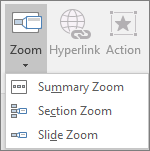

To add a Zoom, go to Insert > Zoom.
To summarize the entire presentation on one slide, choose Summary Zoom
To show selected slides only, choose Slide Zoom
To show a single section only, choose Section Zoom
